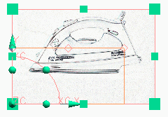
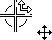
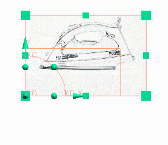

导入和定位光栅图像
导入和定位光栅图像
本例将展示如何在某一部件(在该本例中为矩形)的指定区域内导入并定位光栅图像。
|
注释 |
在开始前，确保将渲染样式设为艺术外观 |
-
在可视化形状工具条上，单击光栅图像
，或选择视图→可视化→光栅图像。光栅图像对话框将打开。
-
在平面设置组中，选中锁定宽高比复选框。
-
单击指定 TIFF 图像。
TIFF 图像文件对话框将打开。
-
导航至所需位置并选择 .tif 文件。
-
单击确定以关闭 TIFF 图像文件对话框。
-
在光栅图像对话框中，在操作组中单击创建光栅图像。
在当前 WCS 原点和方位(位于 XY 平面)上创建片体，然后 TIFF 图像被映射到该片体。

-
在矩形内定位铁光栅图像的主体。在光栅图像的区域内定位光标，从而可以看到转换符号 。
-
单击并将光栅图像拖动就位，从而铁的图像可位于矩形内。

-
单击确定以关闭光栅图像对话框。
现在可以添加样条来与图像轮廓匹配，并开始开发必要的曲面来定义铁的模型。